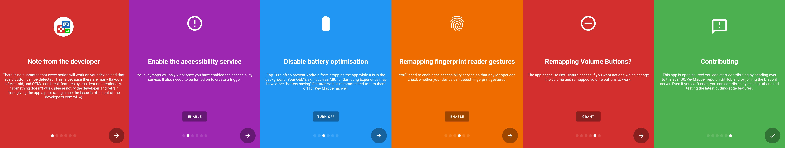
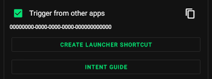

手机音量键还能这么玩？Key Mapper 五分钟从入门到上瘾
觉得 Android 手机的物理键太少、功能太死板？Key Mapper 能把音量键、指纹手势甚至屏幕上的浮窗按钮重映射成你想要的任何操作。这篇从零基础带你走完五分钟上手全流程。
这篇文章能带你从"完全没听过键映射"到"用 Key Mapper 改好第一个快捷键"，不需要任何电脑基础或 Android 折腾经验——跟着点就行。
它到底是干嘛的？一个生活化类比就懂
想象一下你手机上的音量键，从出厂那天起就只会干一件事：调音量。Key Mapper 就是给这些物理键换工作的工具——你可以把音量减改成截图、把指纹下滑改成通知栏、甚至在屏幕上画一排悬浮按钮当游戏快捷键。
去keymapper官网能看到完整的功能演示。说得更直白点：它让你的 Android 手机"听懂"你的按键习惯，而不是反过来让你去适应手机那套固定逻辑。
五分钟上手：从装完到跑出第一个快捷键
别急着搜教程，跟着下面六步走，保证五分钟内看到效果。
第 1 步：安装并打开
先去下载拿对安装包装上。装好第一次打开，会先看到六张介绍卡片——开发者的说明、无障碍服务、电池优化这些，一张一张划过去就行，别慌着跳过，漏掉的权限后面主页会补提示。

划完卡片进入主页，顶部可能会冒出几条彩色告警条，右侧都带着 FIX 按钮——这些是必须处理的授权，不搞定软件根本用不了。
第 2 步：处理主页告警的三个 FIX
三条告警分别对应三个关键权限，按顺序点 FIX 就行：
- 无障碍服务：点 FIX 会跳到系统设置页，找到 Key Mapper 打开开关。这是软件能"看见"你按键的基础，必须开。
- 电池优化：Android 为了省电会后台杀掉没在运行的 App，Key Mapper 被你按了按键才响应，很容易被误杀。点 FIX 后把它加入"不优化"名单。
- 免打扰访问：只有你想改音量键的时候才需要这个权限，如果你只打算用浮窗按钮或指纹，可以先跳过。
三条告警全消掉，主页左上角状态变成绿色 Running，准备工作就完成了。
第 3 步：创建第一个键映射——点底部加号
主页底部有个醒目的红色加号，点进去就是键映射编辑页。默认停在 TRIGGER（触发器）标签，点中间那个大的红色 Record trigger 按钮。
现在按一下你想改功能的物理键——比如音量减，它会被自动录进列表。录完按法不对也不怕，右侧三点菜单可以改点击类型（短按、长按、双击都行），或者直接删掉重录。
第 4 步：给触发器配动作
录完触发器切到 ACTION（动作）标签，点加号选择你想让它干的事。Key Mapper 内置了几十种动作：开应用、模拟按键、拍照、翻页、发送 Intent……新手从"开应用"或"模拟按键"开始最直观。
选好动作点保存图标，一条键映射就挂在主页了。
第 5 步：试一下
回到主页，按一下刚才录的物理键——动作触发了吗？如果顺利，你已经完成了第一次键映射！如果没反应，先看主页左上角状态是不是 Running，再检查有没有漏权限。
第 6 步：（可选）加个约束让它只在特定地方生效
键映射默认全局生效——你改了音量减，那在任何 App 里按音量减都会触发你的动作。如果你只想让它在某几个 App 里生效（比如只在微信里把音量减改成拍照），进约束标签加个"应用筛选"就行。
上手后先玩这三个功能——新手最值得先碰的
跑通第一个键映射之后，别忙着配一堆没用的，先把下面这三个最实用的功能玩明白。
功能一：长按音量键切手电筒——你会发现"原来可以这么快"
很多人不知道 Android 默认的手电筒其实要下拉通知栏点图标，至少两到三步。把长按音量减（或加）重映射成"打开/关闭手电筒"，从口袋掏出手机按住音量键就能开，比在黑暗里摸屏幕靠谱多了。
别担心"那正常调音量怎么办"——短按音量键还是调音量，只有长按才触发手电筒。这就是 Key Mapper 的点击类型机制：一个物理键可以分出短按、长按、双击三种不同行为，互不干扰。
功能二：指纹手势——把手机解锁那块区域用起来
大多数 Android 手机的指纹传感器都在背后或屏下，解锁是它唯一的活。Key Mapper 支持指纹手势重映射——上滑、下滑、左滑、右滑各配一个动作，比如上滑截图、下滑打开通知栏。
注意这个功能需要你的设备支持对应的手势事件，如果录指纹手势时没反应，说明厂商没开放这个事件，不是 Key Mapper 的问题。具体哪些设备支持哪些事件，去keymapper文档里查就有数了。
功能三：浮窗按钮——给大屏手机做个单手控制面板
大屏手机最尴尬的点就是拇指够不着屏幕顶部。Key Mapper 可以在屏幕上挂一排可拖拽的悬浮按钮，位置随便放——贴在屏幕下缘、侧边、甚至藏进通知栏都行。

把手电筒、截图、返回这三个高频操作做成浮窗条贴在屏幕下缘，拇指一键就能够到。而且浮窗按钮作为触发器进键映射的方式和物理键完全一样——短按、长按、双击、序列、并行，所有规则照常适用。
小白的三个常见疑问
玩到这里你大概率会碰下面这几个坑，提前知道就不用慌。
疑问一：为什么按了键没反应？
八成是后台被杀了。检查一下：
- 主页左上角状态是不是 Running（红色 Paused 说明你暂停了全部映射，快速设置里能一键恢复）
- 电池优化是不是真的关了（有些品牌手机会偷偷把它重新优化）
- 无障碍服务还开着吗（有时候系统升级会把它关掉）
主页顶部的告警条会实时提示这些状态，盯着它就行。
疑问二：我想改音量键但录完弹免打扰权限错误？
这是正常的——Android 系统对音量键有特殊保护，改它必须授予勿扰模式访问权限。按提示点 FIX 跳过去授权就好，授权完回来重录一次音量键就行。
疑问三：键映射有时候自己停了，过一会又好？
这是 Android 后台管理和你的手机厂商系统的博弈。华为、小米、OPPO 这些厂商的电池管理比原生 Android 激进得多，即使你关了电池优化，App 闲置久了还是会被冻结。
三个解法：一是把 Key Mapper 加到系统"后台白名单"里（各品牌设置入口不同，搜你的机型加"后台白名单"就能找到）；二是在 Key Mapper 通知栏开关里保持"键映射通知"开启，常驻通知能显著降低被杀概率；三是实在不行就重启一下，大部分时候能顶一阵。
结尾
五分钟上手、三个功能先玩、三个坑提前避开——到这里你已经能独立配置日常使用的键映射了。
下一步可以试试多键组合（比如同时按音量加+音量减触发截图）或者序列模式（先按音量加再按音量减开手电筒），Key Mapper 的潜力比你想象的大得多。有问题也别慌，开发者的反馈渠道畅通得很，复现问题后点主页菜单里的报告问题按钮就能提交——开发者真的会看。
另外这套资料我同步备份了一份到三个仓库，方便不同环境下查阅：GitHub 主仓库放完整的分类目录，Gitee 在国内访问更顺畅，GitCode 作为第三个备份点，三份内容保持一致，按需取用就好。